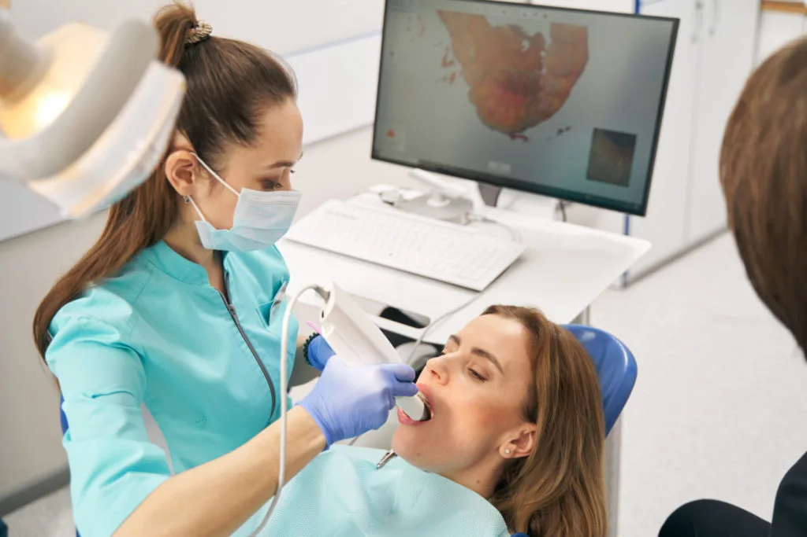
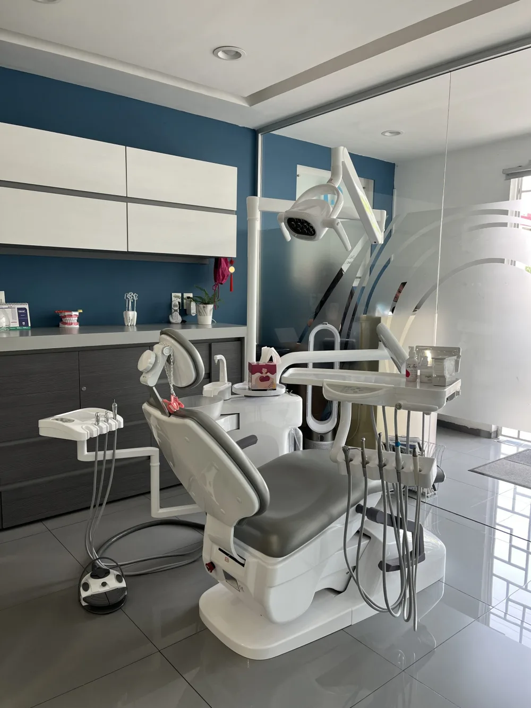

01
Implantes
dentales
Raíces artificiales de titanio que se integran al hueso para soportar coronas o prótesis, ofreciendo una solución segura y duradera para reemplazar dientes perdidos.
Saber más ↗Odontología integral · Ciudad Satélite
Una forma única de cuidar tus dientes, con tecnología, experiencia y un trato verdaderamente humano.
Atención especializada
para cada etapa de tu sonrisa

Diagnóstico claro.
Tratamiento preciso.
ODONTOLOGÍA CON PROPÓSITO
Contamos con más de 20 años de experiencia ayudando a nuestros pacientes a lucir sonrisas saludables. Cuidamos cada detalle para brindarte el mejor tratamiento, con una atención profesional y cercana.
Nuestra filosofía →Tratamientos
Desde prevención hasta rehabilitación completa, diseñamos un plan claro y personalizado para ti.
Raíces artificiales de titanio que se integran al hueso para soportar coronas o prótesis, ofreciendo una solución segura y duradera para reemplazar dientes perdidos.
Saber más ↗Desde blanqueamientos hasta carillas dentales, diseñamos soluciones personalizadas para lograr dientes más blancos, alineados y armoniosos.
Saber más ↗Parciales o completas, reemplazan dientes perdidos y devuelven funcionalidad y estética para que vuelvas a sonreír con confianza.
Saber más ↗Un tratamiento seguro y efectivo para eliminar manchas, aclarar el tono de tus dientes y recuperar su blanco natural sin dañar el esmalte.
Saber más ↗ Estás en las mejores manos.
Estás en las mejores manos.Nuestra esencia
Conoce a nuestro equipo de profesionales de la salud. Cuidamos cada detalle para ofrecer una experiencia dental diferente, profesional y con un trato cercano.
Tecnología e instalaciones
Herramientas de diagnóstico e instalaciones cuidadas para que comprendas tu salud bucal y recibas el tratamiento adecuado.

Nuestra cámara intraoral nos permite mostrarte en tiempo real imágenes detalladas del interior de tu boca. Detectamos caries, fracturas o inflamación de encías con mayor precisión para facilitar un diagnóstico claro y oportuno.

Contamos con instalaciones modernas y cuidamos especialmente la higiene para ofrecerte un servicio profesional de alta calidad.
La experiencia
Queremos que te sientas escuchado,
seguro y en las mejores manos.
Conocemos tus necesidades, dudas y objetivos.
Evaluación precisa con tecnología moderna.
Un tratamiento transparente y hecho para ti.
Seguimiento cercano antes, durante y después.
Testimonios
Experiencias compartidas por pacientes de Consultorio Dental Satélite.
“Siempre son muy serviciales, amables y atentas. Brindan un servicio de calidad; me gusta que está muy limpio el consultorio.”
Fatima Romo
“Excelente servicio y atención. El equipo es muy profesional y me explicaron todo el procedimiento con detalle. ¡Súper recomendado!”
Felix Bobadilla
“Tenía mucho miedo de ir al dentista, pero aquí me hicieron sentir en confianza desde el primer momento. Ahora sonrío sin preocupaciones.”
Luis Gonzalez
“Atención de primera y resultados increíbles. Mi sonrisa luce mejor que nunca. ¡Gracias, Consultorio Dental Satélite!”
Mariana Ramirez
“Profesionales, puntuales y con un trato amable. Sin duda, mi clínica de confianza para cualquier tratamiento dental.”
Fernando Torres
“Desde la primera consulta supe que estaba en buenas manos. Me explicaron todo con paciencia y el tratamiento fue un éxito.”
Sofía Peralta
Da el primer paso
Agenda una valoración y descubre el tratamiento ideal para ti.
Agendar por WhatsApp ↗